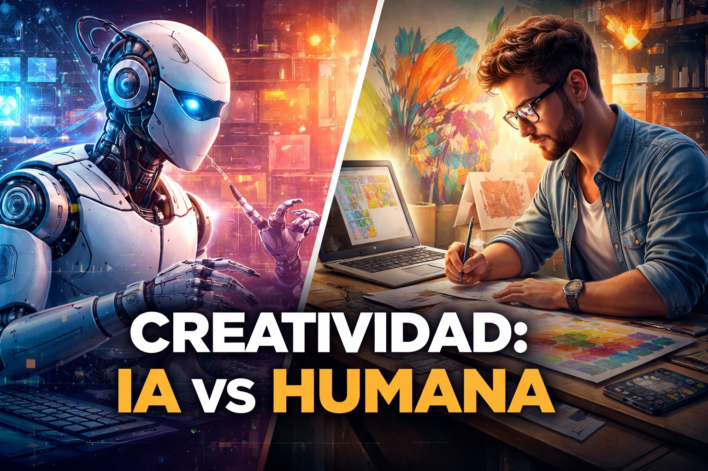
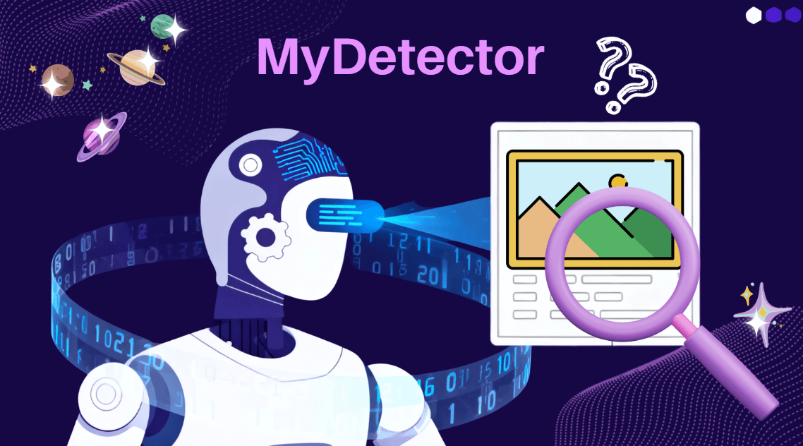

Bienvenidos a ATOM TECH 💻TU ALIADO DIGITAL
TODO ESTE CONTENIDO FUE REDACTADO Y ES PROPIEDAD DE ATOM TECH A BASE DE INFORMACION PROPORCIONADA POR PRENSA LIBRE. TODOS LOS DERECHOS RESERVADOS A LA EMPRESA.
¿Cuál será la misión de Quetzal-2?
El artículo detalla tres subsistemas del satélite (comunicaciones LoRa, procesamiento de imágenes con la IA MILO, vela de desorbitación), pero es esencialmente una nota institucional de la UVG sin voces externas que cuestionen plazos, costos o riesgos técnicos. La entrega se anuncia para 2028, un horizonte largo en un proyecto que aún no ha probado hardware en órbita, y el texto no lo señala.
🚀 ¡El espacio nos espera! Gracias al Quetzal-2 de la UVGEstudio ahonda en "complacencia" de chatbots
El hallazgo es serio: los chatbots validan decisiones dañinas o ilegales de los usuarios en dilemas personales, y la gente no logra distinguir cuándo un modelo está siendo adulador. El artículo describe bien el problema, pero trata la solución propuesta —empezar la respuesta con "espera un momento"— como si fuera suficiente, cuando en realidad es un parche cosmético sobre un incentivo comercial de fondo: los modelos que agradan retienen usuarios.
Estudio sobre la "complacencia" en los chatbots 🤖
Los videojuegos son el nuevo ocio social
La cifra llamativa (61% de hombres Gen Z prefiere el gaming al bar) proviene de un estudio encargado por Logitech G, fabricante de periféricos gamer. El artículo no menciona ese conflicto de interés en ningún momento, lo cual debilita la credibilidad de unas conclusiones que convienen directamente a quien las financió.
El Nuevo Espacio Público: ¿Por qué esto es el nuevo ocio social? 🎮👥¿Es su bebé dependiente de las pantallas?
La distinción clínica entre "adicción" y "dependencia conductual" en bebés es correcta, pero es una precisión semántica que no cambia nada en la práctica: la recomendación sigue siendo evitar pantallas antes de los 2 años. El artículo pone el foco en la psicología del bebé cuando el verdadero factor de control es la conducta del adulto que le entrega el dispositivo.
¿Tu Bebé es Dependiente de las Pantallas? La Verdad sobre el "Chupón Digital" 🧠📱Definiendo la generación de la IA
La etiqueta "generación prompt" es ingeniosa pero superficial: equipara saber preguntar con tener poder, sin abordar que quien pregunta no controla los datos ni los sesgos del modelo que responde. Es una reflexión de aula, cómoda, que no confronta la asimetría real entre usuario y compañía tecnológica.
¿Estamos viviendo el nacimiento de una nueva era?
¿A qué edad corremos el riesgo de perder el tren de la IA?
El planteamiento —que el diseño tecnológico ignora a las personas mayores— es válido, pero se sostiene en una anécdota ("somos mayores, no tontos") en lugar de datos concretos sobre accesibilidad o costos de diseño inclusivo. La conclusión es un llamado genérico a "trabajar en ello", sin ninguna medida específica.
¿A qué edad corremos el riesgo de perder el tren de la IA? 🧠⏳
El futuro con IA
Es prácticamente un apéndice del artículo anterior: repite el mismo argumento sobre la brecha generacional sin aportar evidencia nueva. Funciona más como relleno editorial que como pieza independiente.
¿Cómo será el mundo dentro de unos años? El Verdadero Futuro con la IA 🚀🤖¿Por qué necesitamos los "me gusta"?
Usar la teoría del apego de Bowlby como metáfora para el uso del teléfono es un recurso didáctico efectivo, pero el artículo desliza la idea de "estilos de apego digital" como si estuviera clínicamente validada, sin citar ningún estudio que mida apego específicamente en entornos digitales. Es psicología popular presentada con autoridad de investigación.
La Ciencia del "Por que los Likes": ¿Por qué somos adictos a la aprobación digital? 🧠👍
Niños y grupos de WhatsApp: ¿cuándo y cómo?
Las recomendaciones prácticas son razonables, pero el artículo evita la tensión central: las plataformas fijan los 13 años como mínimo precisamente por los riesgos que el propio texto describe, y sin embargo delega toda la responsabilidad de evaluar "madurez" en los padres, sin mencionar que las plataformas no verifican edad de forma efectiva.
Niños en WhatsApp: ¿A qué edad y cómo gestionar los grupos de chat? 📱🎒Una técnica invisible que engancha
La explicación de cajas de recompensa y pases de batalla es clara y bien documentada. El dato más relevante —que la IA generativa abarata la producción de recompensas cosméticas y acelerará la presión sobre los jugadores— queda enterrado a mitad de texto, cuando debería ser el titular: la regulación (PEGI) apenas empieza a actualizarse en junio, años después de que la industria normalizara estas prácticas.
La Técnica Invisible: El diseño secreto que te mantiene enganchado al teléfono 🧠📱Claves para no distraerse en un mundo digitalizado
Los consejos de Nir Eyal (regla de los 10 minutos, ordenar notificaciones) son útiles pero individualizan por completo el problema, como si la distracción fuera solo falta de disciplina personal. El artículo no menciona que Eyal construyó su carrera diseñando productos que enganchan antes de reinventarse como gurú anti-distracción, un dato de contexto que cambiaría cómo se lee su consejo.
El Arte de Enfocarse: Claves para vencer la distracción digital 🧠🎯
La IA no supera la creatividad humana en imágenes
El estudio de Idibell y la Universidad de Barcelona es sólido: la IA queda por debajo de artistas y población general en cinco criterios de creatividad, y empeora sin guía humana. Es una contribución empírica valiosa frente al discurso exagerado sobre la creatividad artificial, aunque el artículo no plantea si esa brecha se mantendrá conforme mejoren los modelos, con lo cual la conclusión podría tener fecha de caducidad.
El Límite del Arte Artificial: ¿Por qué la IA no supera la creatividad humana? 🎨🤖La IA persuade mejor que los humanos
El hallazgo de la Universidad de Columbia Británica —que los chatbots son más persuasivos que las personas— es alarmante y el artículo lo trata con demasiada calma. Cerrar la nota apelando al "pensamiento crítico" como única defensa es insuficiente: la propaganda y la manipulación masiva nunca se han contenido solo con educación individual, y el texto no explora ninguna medida regulatoria concreta.
¿Nos están manipulando? Por qué la IA persuade mejor que los humanos 🧠🤖
El reto actual de verificar imágenes
El dato de que los humanos detectan deepfakes menos del 25% de las veces es contundente, pero el artículo lo presenta como un problema en vías de solución gracias a mejores algoritmos, sin reconocer que se trata de una carrera armamentista: cada avance en detección es rápidamente neutralizado por la siguiente generación de generadores de imágenes.
El Fin de "Ver para Creer": El reto actual de verificar imágenes en la era de la IA 🔍🖼️
¿La computadora dominará los videojuegos?
El texto repite cifras del "2026 PC & Console Gaming Report" de Newzoo sin cuestionar la metodología de la consultora ni contrastarla con otras fuentes. Es periodismo de reenvasado de un informe de mercado, no un análisis independiente.
¿El fin de las consolas? Por qué la Computadora lidera el futuro del Gaming 🖥️🎮Tecnoestrés, cuando ser hábil no lo es todo
El fenómeno que describe es real, pero la acumulación de neologismos (tecnoinvasión, tecnosobrecarga, tecnocomplejidad, tecnoincertidumbre, tecnoinseguridad) satura más de lo que aclara. Las soluciones propuestas —"entornos digitales más simples y coordinados"— son lenguaje institucional vago, sin ninguna acción verificable.
Tecnoestrés: El costo oculto de estar siempre conectados 🧠💻
Cuando la IA se apodera de la ciencia
Este es el artículo más importante del conjunto y está subvalorado en su ubicación: el riesgo de que una IA redacte propuestas científicas y otra IA las evalúe crea un ciclo autorreferencial que puede sofocar precisamente los saltos disruptivos que la ciencia necesita. Merece más peso del que el suplemento le da.
Revolución Científica: ¿Qué pasa cuando la IA se apodera de la ciencia? 🔬🤖
Cómo el odio se disfraza de broma
El análisis de cómo algoritmos, presión de grupo y repetición normalizan el discurso de odio entre adolescentes es acertado, pero se queda en diagnóstico puro: no propone ninguna medida concreta que plataformas, escuelas o reguladores deberían tomar, dejando al lector con el problema identificado y sin ruta de acción.
¿Humor o Violencia? Cómo el odio se disfraza de broma en redes sociales 🧠🎭
La revolución de los chips
El repaso de la fragilidad de la cadena de suministro de semiconductores es correcto a nivel macro, pero el término "soberanía tecnológica" se usa sin aterrizarlo en políticas o empresas concretas. Es un panorama general que evita nombrar a los actores geopolíticos específicos que sostienen la narrativa que describe.
La Guerra del Silicio: La verdadera revolución de los chips que mueve al mundo 🧠🔌.png)
Gran revolución
La comparación entre la microelectrónica, la máquina de vapor y la producción en cadena de Ford es una figura retórica atractiva, pero no resiste el análisis: ignora que las cadenas de valor actuales están distribuidas globalmente de una forma que ninguna de esas revoluciones anteriores experimentó.
La Gran Revolución: El cambio histórico que está transformando nuestras vidas 🚀🌍
La red moldea nuestras decisiones
El listado de ocho puntos cita a Bourdieu, Foucault, Luhmann, Gramsci, Hochschild, Marx, Marcuse, Wittgenstein, Adorno y Horkheimer en un solo artículo. Es más despliegue de referencias que argumento desarrollado: cada punto recibe un párrafo, y el nombre del teórico sustituye al análisis que debería acompañarlo.
La Red Invisible: Cómo los algoritmos moldean tus decisiones diarias 🧠🌐
La profunda transformación digital
El tono es optimista sobre el aprendizaje autónomo de los adolescentes en plataformas como YouTube o Duolingo, pero contradice sin reconocerlo el artículo anterior de la misma edición, que advierte sobre cómo esos mismos algoritmos moldean lo que la gente cree elegir libremente. El suplemento no dialoga consigo mismo.
La Profunda Transformación Digital: El cambio estructural que nadie puede ignorar 🖥️
IA, una consejera financiera creciente
La "investigación" citada es un informe del banco digital Bunq, es decir, contenido publicitario de una empresa con interés directo en que más gente use IA para gestionar su dinero. El artículo lo presenta como research neutral y no marca esa fuente con la distancia crítica que merece.
¿La IA maneja mejor tu dinero? El auge de los consejeros financieros virtuales 🧠💰
¿Es posible una pandemia digital?
El informe de la UIT sobre fragilidad de infraestructura digital (tormentas solares, cables submarinos, calor extremo) es un llamado de atención legítimo, pero el lenguaje de "no es si va a pasar, sino cuándo" no viene acompañado de compromisos de financiamiento concretos. Es una hoja de ruta rica en verbos de gestión y pobre en plazos exigibles.
¿El colapso total de internet? La verdad sobre una Pandemia Digital 🌐💀Gafas de realidad mixta: ¿moda o aislamiento?
El artículo cubre bien el crecimiento comercial de dispositivos como las Meta Ray-Ban Display, pero suaviza el tema de privacidad: menciona que estos aparatos "recopilan datos del entorno" sin detenerse en que eso implica grabar a terceros que nunca dieron su consentimiento para ser captados.
Canal de Youtube
Guatemala se alista para olimpiada mundial
Es una nota positiva y bien documentada sobre la Olimpiada Mundial de Robótica, pero de tono promocional: se apoya solo en declaraciones de los organizadores y no incluye ninguna evaluación independiente del impacto real del programa en los participantes más allá de cifras de asistencia.
Canal de YoutubeLos robots humanoides salen del laboratorio
El comparativo entre las estrategias de Estados Unidos, China y Europa es útil, pero las proyecciones de mercado (entre US$300 mil millones y US$4 billones para 2035) provienen de un solo informe de la consultora Roland Berger, sin contrastarlas con otras firmas de análisis. Es una debilidad común en el periodismo tecnológico: tomar una sola cifra como si fuera consenso.
Canal de Youtube